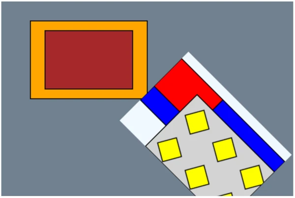
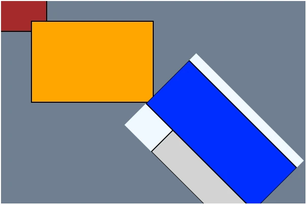

Scrawl-canvas Groups and Cells
Scrawl-canvas works by generating a retained mode description - an object model of graphical primatives (called entitys) - for a scene which displays in a <canvas> element. SC builds this scene graph using Group and Cell objects, alongside entity objects which get gathered into the Group objects that have been created for the scene.
tl;dr: SC is not a game engine! The SC scene graph does not use the classic tree structure approach to build out a top-down hierarchy of layers and nodes to describe the scene. Rather, SC uses a more bottom-up approach to creating the scene graph where entity objects control how, where and when they will appear in the canvas display. Using a tree structure for the scene graph may have been a more efficient design choice, but SC is not a game engine!
Dev-users should be aware that this - somewhat different - approach may take a bit of getting used to but, once the concepts are in place, it should be relatively simple to work with.
The SC scene graph
The following code creates a canvas display with this output. Note that the code is creating a deliberately complex scene-graph, for demonstration purposes; none of the test demos generate scene graphs as complex as this one:

<!DOCTYPE html>
<html>
<head>
<meta charset="utf-8">
<meta http-equiv="x-ua-compatible" content="ie=edge">
<meta name="viewport" content="width=device-width, initial-scale=1">
<style>
canvas { margin: 1em auto; }
</style>
</head>
<body>
<canvas
id="my-canvas"
width="600"
height="400"
data-scrawl-canvas
data-base-background-color="slategray"
></canvas>
<script type="module">
// Import SC
import * as scrawl from 'scrawl-canvas';
// Get a handle to the Canvas artefact
const canvas = scrawl.findCanvas('my-canvas');
// Namespacing boilerplate
const namespace = `${canvas.name}-placehold`;
const name = (n) => `${namespace}-${n}`;
// The Canvas artefact includes a hidden Cell, used as a Pattern style by an entity
canvas.buildCell({
name: name('my-hidden-cell'),
shown: false,
dimensions: [80, 80],
backgroundColor: 'lightgray',
});
// A yellow Block in the hidden Cell
scrawl.makeBlock({
name: name('yellow-block'),
group: name('my-hidden-cell'),
dimensions: ['50%', '50%'],
start: ['center', 'center'],
handle: ['center', 'center'],
roll: 30,
fillStyle: 'yellow',
lineWidth: 2,
method: 'fillThenDraw',
});
// An extra Cell that will appear towards the bottom-right of the canvas display
canvas.buildCell({
name: name('my-extra-cell'),
dimensions: ['50%', '50%'],
start: ['70%', '70%'],
handle: ['50%', '50%'],
roll: 45,
backgroundColor: 'aliceblue',
});
// The extra Cell has an additional Group as well as its namesake Group
scrawl.makeGroup({
name: name('my-additional-group'),
host: name('my-extra-cell'),
});
// Part of the additional Group
scrawl.makeBlock({
name: name('blue-block'),
group: name('my-additional-group'),
dimensions: ['100%', '60%'],
offsetY: 20,
fillStyle: 'blue',
lineWidth: 2,
method: 'fillThenDraw',
});
// For this scene, the extra Cell's namesake Group
// needs to compile after its additional Group
scrawl.findGroup(name('my-extra-cell')).set({ order: 1 });
// Part of the extra Cell's namesake Group
scrawl.makeBlock({
name: name('red-block'),
group: name('my-extra-cell'),
pivot: name('blue-block'),
lockTo: 'pivot',
dimensions: ['40%', '40%'],
fillStyle: 'red',
lineWidth: 2,
method: 'fillThenDraw',
});
// Part of the extra Cell's namesake Group
// - using the hidden Cell as its fillStyle value
scrawl.makeBlock({
name: name('last-block'),
group: name('my-extra-cell'),
fillStyle: name('my-hidden-cell'),
dimensions: ['75%', '75%'],
start: ['25%', '25%'],
lineWidth: 2,
method: 'fillThenDraw',
});
// Part of the Canvas artefact's base Cell's namesake Group
scrawl.makeBlock({
name: name('orange-block'),
dimensions: ['40%', '40%'],
start: ['30%', '30%'],
handle: ['center', 'center'],
fillStyle: 'orange',
lineWidth: 2,
method: 'fillThenDraw',
});
// Part of the Canvas artefact's base Cell's namesake Group
scrawl.makeBlock({
name: name('black-block'),
dimensions: ['30%', '30%'],
pivot: name('orange-block'),
lockTo: 'pivot',
handle: ['center', 'center'],
fillStyle: 'black',
lineWidth: 2,
method: 'fillThenDraw',
});
canvas.render();
</script>
</body>
</html>The scene graph for the above code looks like this:
- Canvas artefact 'my-canvas'
|
|- base Cell object 'my-canvas_base'
| |
| |- namesake Group object 'my-canvas_base'
| |
| |- Block entity 'orange-block'
| |- Block entity 'brown-block' (position dependency on 'orange-block')
|
|- hidden Cell object 'my-hidden-cell'
| |
| |- namesake Group object 'my-hidden-cell'
| |
| |- Block entity 'yellow-block'
|
|- extra Cell object 'my-extra-cell'
|
|- additional Group object 'my-additional-group'
| |
| |- Block entity 'blue-block'
|
|- namesake Group object 'my-extra-cell'
|
|- Block entity 'red-block' (position dependency on 'blue-block')
|- Block entity 'last-block' (style dependency on 'my-hidden-cell')The scene graph described above demonstrates these properties:
- The scene graph hierarchy is exactly four levels deep …
- Level 1 - Artefact objects,
- Level 2 - Cell objects (relevant only for Canvas artefacts),
- Level 3 - Group objects,
- Level 4 - Entity objects.
- Every Cell object has a namesake Group object.
- Cells cannot be nested; Groups cannot be nested, etc.
- Though only shown here for one Cell, every Cell, Group and Entity object can control its own visibility in the Canvas display.
- Entitys are assigned to Groups (and Groups to Cells, Cells to the Canvas artifact) as they are created - the object lower down the hierarchy maintains details of the object it has assigned itself to.
- Though not shown here … Cell, Group and Entity objects can reassign themsleves to a different Canvas, Cell or Group object (respectively) at any time.
- Again not shown here … entitys can belong to more than one Group object at any time.
- Furthermore not shown here … Group objects can exist independently of Cell objects - they're just collections of entity objects.
- Cell objects can position themselves in the Canvas display; Entity objects can position themselves in their Cell's display.
- Group objects play no role in positioning - there is no "cascade of matrix multiplications" between Cells, Groups and entitys.
- Some of the entitys have direct dependencies on other entitys for their positioning data, and one entity has a direcet dependency on a Cell to supply its fill style.
- A final not shown here … Entitys can change their positioning and/or styling dependencies at any time.
SC Group objects
tl;dr: Group objects represent a collection of SC artefact (including entity) objects - and that is all they are!
SC uses Group objects for a range of functionalities across the repo code base:
- Every SC Stack artefact and Cell object is given a namesake Group when they are created, to which can be added other Artefact objects (for Stacks) or entity objects (for Cells) which need to be displayed in them.
- (Note that SC Canvas artefacts do not have their own namesake Group as they only have one Cell object to worry about - their
baseCell). - Dev users can create new Group objects at any time using the
scrawl.makeGroup({ key: value, ...})factory function. - Stack artefacts and Cell objects can include more than one Group object - dev-users can add/remove their user-created Group objects to Stacks and Cells at any time. Any Element/entity objects included in the Group object will become part of the Stack/Cell output display.
- For convenience, Element/entity objects belonging to a Group object can have their attributes modified at any time via Group object functions.
- Group objects can be used to define the set of Element/entity objects which can be dragged-and-dropped as part of a
dragZoneobject. See test demo Canvas-026 for an example. - Group objects can be used to define a set of entity objects to which a filter effect can be applied.
Most of the code relating to Group object functionality can be found in the following files:
- factory/group.js - for the Group object's factory function.
- mixin/cascade.js - used by Stack and Cell objects to help manage their Group objects.
Create, serialize, clone and kill Group objects
For the most part, Group objects act like regular SC objects, with a few quirks …
Create
A new Group object can be created using the scrawl.makeGroup({key: value, ...}) factory function:
- While Group objects can share a
nameattribute with a Stack artefact or Cell object, dev-users should try to keep Group names unique - just to be on the safe side. - Group objects do not need to be associated with a Stack artefact or Cell object
host, but when they are being created specifically to be part of such objects then include thehostattribute in the argument object, setting its value to either the host object itself, or the object'snamestring. - Element artefacts and entity objects can be added to the Group during its creation by setting the argument object's
artefactsattribute to an array of Element/entitynamestrings; alternatively, populate the Group with Element/entity objects after Group creation completes -scrawl.makeGroup({...}).addArtefacts(item, item, ...).
Serialize
Group objects can be serialized using the group.saveAsPacket() function. The serialized packet will include all the currently associated artefact/entity object name strings in the artefacts attribute, but will not clone the artefacts themselves.
(TODO: Repo-devs need to review how Group serialization should work with respect to associated artefacts and entitys - should there be a mechanism in the functionality to tell the group.saveAsPacket() invocation to serialize associated objects at the same time as it serializes the Group object?)
Clone
Group objects can be created from another Group by cloning: group.clone({key: value, ...}).
The cloned Group object will include the currently associated artefact/entity object name strings in the artefacts attribute, but will not clone those objects themselves.
This may lead to issues if the Group is involved in the Display cycle as those objects will get stamped twice: once through association with the original Group, and again through association with the clone Group.
Kill
Use the group.kill() function. Unlike (most) other SC objects, the Group kill function can take 1-2 boolean arguments which, when set to true, will also kill all the artefact/entity objects currently associated with the group:
group.kill(),group.kill(false)- remove the Group object from the SC ecosystem, leaving the associated artefact/entity objects untouched.group.kill(true),group.kill(true, false)- kill the Group object's associated artefact/entity objects before removing the Group object from the SC ecosystem. Any artefact elements will remain in the DOM.group.kill(true, true)- the same asgroup.kill(true), except this time artefact elements will also be deleted from the DOM.
Group objects also include functionality to kill all their currently associated artifact/entity objects while keeping the Group object itself intact:
group.killArtefacts(),group.killArtefacts(false)- any artefact elements will remain in the DOMgroup.killArtefacts(true)- any artefact elements will be deleted from the DOM
Group discovery in the SC library, and beyond
Group objects are tracked in the SC library, in the library.group section. If the dev-user needs to retrieve a handle to a Group object, and they know the object's name attribute, they can do this using scrawl.findGroup('name-string').
SC also includes functionality for the dev-user to retrieve Group objects via their Stack/Canvas artefact host object, and from Cell objects:
stack.getGroup()- retrieve the Stack artefact's namesake Group object.stack.get('groups')- get an Array of Group name strings currently associated with the Stack artefact.canvas.get('baseGroup')- retrieve the Canvas artefact'sbaseCell object's Group object.cell.getGroup()- retrieve the Cell object's namesake Group object.cell.get('groups')- get an Array of Group name strings currently associated with the Cell object.
Add Group objects to Stack/Cell objects, and remove them
There's three approaches to associating a Group object with a Stack artefact or Cell object. The simplest method is during Group instantiation, by including a host attribute in the scrawl.makeGroup() factory function's argument object.
Dev-users can also use the stack.addGroup(...items) and cell.addGroup(...items) functions, where either the name attribute strings of the Group objects, or the Group objects themselves, are used as the function's arguments. Similarly, remove Group objects using the stack.removeGroup(...items) and cell.removeGroup(...items) functions.
SC recommends that dev-users avoid the stack.set({ group }), cell.set({ group }) options because: only one group can be handled using this approach; and the operation will clear out all other associated Groups (including the namesake Group) before associating the new Group object.
Group visibility, order and sorting
The following only applies to Group objects associated with Cell objects that are part of the Display cycle.
Group objects include a visibility attribute which, when set to false, will cause the Display cycle to skip over processing all of the artefacts/entitys associated with that Group - they will not recalculate their state, and they will not be stamped into the final Canvas display.
Group objects also include an order attribute, which should be set to a positive integer value (default: 0). Entitys associated with a Group will all be processed on a per-group basis, with the artefacts in a Group with a lower order value completing their processing before the next group of entitys start their processing.
Cell objects store the name strings of the Group objects associated with them in an Array keyed to their cell.groups attribute. As part of any sorting operation, the Cell object will retrieve the Group objects from the SC library, sort these objects in ascending order values and then store references to the now sorted Group objects in an internal cell.groupBucket Array. The groups Array should never itself be sorted as this represents the order in which Groups get associated with the Cell - which is itself determined in the the code written by dev-users.
Cell objects only re-sort their Group objects when they have to:
- During the first Display cycle
- When a new Group object is added to the Cell object's
groupsArray - When a Group object is removed from the Cell object's
groupsArray - When a Group object updates its
orderattribute's value
Whenever any of these things happen, the Cell object's batchResort flag will be set to true, thus triggering a re-sort on the next Display cycle. SC uses a simple bucket sort algorithm for the sorting operation. Much of this functionality gets defined in the mixin/cascade.js file.
(Repo-dev note: current functionality is that when a Group object's order value changes - via a group.set({order: newValue}) invocation - the Group will only signal the change to its current host Cell object. This may cause unexpected outcomes (edge cases) for more complex dev-user projects and may need to be revisited at some point.)
(Repo-dev note: Group object visibility for Stack Element artefacts has not been investigated or tested, even though the functionality is - in theory - present. Needs review.)
Add artefact/entity objects to Group objects, and remove them
Artefact/entity objects can be added to, and removed from, a Group object after it has been created by using the following functions:
group.addArtefacts(item, item, ...)- associate the artefact/entity object with the Group object, where each item may be the Artefact/entity object'snameattribute value, or the Artefact/entity object itself.group.moveArtefactsIntoGroup(item, item, ...)- similar toaddArtefacts, except the artefact/entity objects being associated with the Group object will at the same time disassociate from any Group object they currently associate with.group.removeArtefacts(item, item, ...)- the opposite ofaddArtefacts; here each artefact/entity object will disassociate itself from the Group object.group.clearArtefacts()- the Group object instructs all of its associated artefact/entity objects to disassociate from it.
These operations have to be invoked on the Group object itself; SC does not supply convenience functions for the Stack artefact or Cell object to feed through arguments to their namesake Group objects.
Dev-users can retrieve a specified artefact/entity object from a Group object using the group.getArtefact('name-string') function.
Artefact sorting
The functionality previously described for Group ordering and sorting within Cell objects also applies to sorting artefact/entity sorting within Group objects:
- Group objects store the
namestrings of the artefact/entity objects associated with them in an Array keyed to theirgroup.artefactsattribute. This Array is never sorted as it represents the order in which artefacts/entitys get associated with the Group. - Artefact/entity objects have two sort-related attributes (equivalent to the
group.orderattribute):entity.calculateOrder- representing the artefact/entity's processing position during thepreStamp(state recalculation) phase of the Display cycle'scompileoperation.entity.stampOrder- representing the artefact/entity's processing position during thestampphase of the Display cycle'scompileoperation.
- Which means that when a Group object re-sorts its associated artefact/entity objects, it will perform two sorts:
- the results of the
calculateOrdersort are stored in the internalgroup.artefactCalculateBucketsArray. - the results of the
stampOrdersort get stored in thegroup.artefactStampBucketsArray.
- the results of the
Group objects only sort their artefact/entity objects when they have to, signalled through the group.batchResort flag. This flag gets set to true when:
- The Group object is first created
- When a new artefact/entity object is added to the Group object's
artefactsArray - When a artefact/entity object is removed from the Group object's
artefactsArray - When an associated artefact/entity object updates its
calculateOrderorstampOrderattribute's value (both of which can be set to the same value using theorderpseudo-attribute)
SC uses a bucket-sort algorithm to perform these sort operations. Both sorts are handled in a single internal function - group.sortArtefacts() - defined in the factory/group.js file.
(Repo-dev note: current functionality is that when an artefact/entity object's calculateOrder or stampOrder value changes, the artefact/entity will only signal the change to its current host Group object. This may cause unexpected outcomes (edge cases) for more complex dev-user projects and may need to be revisited at some point.)
Update artefact/entity object attributes using Group object functions
Any SC tracked object (an object that inherits functionality from the mixin/base.js file) can have its attributes updated at any time using its .set({key: value, ...}) and .setDelta({key: value, ...}) functions.
SC Group objects include functions that allow such updates to be applied to all of their artefact/entity objects in a single invocation:
group.setArtefacts({key: value, ...})- the Group object will, for each of its associated artefact/entity objects, invoke theirset()function with the same argument that it received.group.updateArtefacts({key: value, ...})- the Group object will, for each of its associated artefact/entity objects, invoke theirsetDelta()function with the same argument that it received.
tl;dr: The difference between
setandsetDeltais:
set({key: value}, ...)- replaces each keyed attribute with the new value.setDelta({key: value}, ...)- for each keyed attribute, adds the new value to the existing value.
Delta manipulations
SC delta animation is explained in the Animation and Display cycle page of this Runbook. Group objects can be used to trigger delta updates across all of their associated artefact/entity objects using the following functions - even when delta animation for that artefact/entity object has been disabled:
group.updateByDelta()- add the keyed attribute values in the artefact/entity object'sdeltaattribute object to its existing attribute values.group.reverseByDelta()- subtract the keyed attribute values in the artefact/entity object'sdeltaattribute object to its existing attribute values.
Artefact class manipulations
Specifically for associated artefact objects, dev-users can add or remove CSS class labels to/from those objects' DOM elements using the following Group object functions - note that the function argument is a String of space-separated classNames:
group.addArtefactClasses('css-classname-1 css-classname-2 ...')- adds the supplied CSS classname strings to the end of the existingartefact.classesattribute.group.removeArtefactClasses('css-classname-1 css-classname-2 ...')-removes each of the CSS classname strings from the existingartefact.classesattribute.
The actual update to the DOM elements doesn't happen straight away. Instead a dirtyClasses flag is set to true, which then gets actioned during the show phase of the Display cycle.
Stack artefact and Cell object equivalent functionality
The mixin/cascade.js file, consumed by the Stack and Cell factory files, provides an equivalent set of manipulation functions which the dev-user can invoke on Stack artefact and Cell object instances. The functions pass their argument through to all of the Group objects currently associated with that Stack or Cell:
cell.setArtefacts({key: value, ...})cell.updateArtefacts({key: value, ...})cell.updateByDelta()cell.reverseByDelta()cell.addArtefactClasses('css-classname-1 css-classname-2 ...')cell.removeArtefactClasses('css-classname-1 css-classname-2 ...')
Apply visual filters to Groups containing entity objects
[copy required]
SC Cell objects
[describe]
Object processing order within the scene graph
When the dev-user adds pivot, mimic, and path references into their SC code (see the positioning system page for details), they also introduce artefact dependencies: if an artefact depends on another artefact to calculate some part of its own display (position, rotation, dimensions, scale), then the need arises for the referenced artefacts to complete their calculations for those attributes before the dependant artefact begins its own calculations.
tl;dr: - SC includes no functionality to internally construct and maintain a dependency graph describing which artefacts need to calculate values before dependent artefact can calculate theirs. It is up to the dev-user to tell SC the order in which artefacts should calculate/update their state.
The SC Display cycle comprises the following steps:
1: Clear
2: Compile
2.1: Calculate
2.2: Stamp
3: ShowA number of attributes are used across the code base to describer ordering; it's important not to confuse them:
SC Cell artefacts use their
compileOrderandshowOrderattributes to determine in which order they will perform the Display cycle compile and show steps.SC Group objects have an
orderattribute which comes into play when two or more Groups contribute entitys to a Cell's display.SC Artefacts have
calculateOrderandstampOrderattributes (which can both be set to the same value using theorderpseudo-attribute).
To understand ordering, consider the code presented in the scene graph section above. But this time the factory functions have been rearranged in the file as shown:
canvas.buildCell({
name: name('my-extra-cell'),
backgroundColor: 'aliceblue',
...
});
scrawl.makeGroup({
name: name('my-additional-group'),
host: name('my-extra-cell'),
});
canvas.buildCell({
name: name('my-hidden-cell'),
shown: false,
backgroundColor: 'lightgray',
...
});
scrawl.makeBlock({
name: name('yellow-block'),
group: name('my-hidden-cell'),
fillStyle: 'yellow',
...
});
scrawl.makeBlock({
name: name('brown-block'),
pivot: name('orange-block'),
fillStyle: 'brown',
...
});
scrawl.makeBlock({
name: name('orange-block'),
fillStyle: 'orange',
...
});
scrawl.makeBlock({
name: name('blue-block'),
group: name('my-additional-group'),
fillStyle: 'blue',
...
});
scrawl.makeBlock({
name: name('red-block'),
group: name('my-extra-cell'),
pivot: name('blue-block'),
fillStyle: 'red',
...
});
scrawl.makeBlock({
name: name('last-block'),
group: name('my-extra-cell'),
fillStyle: name('my-hidden-cell'),
...
});The SC Display cycle will process the above code in the following order:
Canvas {name: 'my-canvas'}
Cell {name: 'my-extra-cell', compileOrder: 0, shown: true}
Group {name: 'my-extra-cell', order: 0}
Block {
name: 'red-block', lockTo: 'pivot', pivot: 'blue-block',
calculateOrder: 0, stampOrder: 0,
}
Block {
name: 'last-block', lockTo: 'start', fillStyle: 'my-hidden-cell',
calculateOrder: 0, stampOrder: 0,
}
Group {name: 'my-additional-group', order: 0}
Block {
name: 'blue-block', lockTo: 'start',
calculateOrder: 0, stampOrder: 0,
}
Cell {name: 'my-hidden-cell', compileOrder: 0, shown: false}
Group {name: 'my-hidden-cell', order: 0}
Block {
name: 'yellow-block', lockTo: 'start',
calculateOrder: 0, stampOrder: 0,
}
Cell {name: 'my-canvas_base', compileOrder: 9999}
Group {name: 'my-canvas_base'}
Block {
name: 'brown-block', lockTo: 'pivot', pivot: 'orange-block',
calculateOrder: 0, stampOrder: 0,
}
Block {
name: 'orange-block', lockTo: 'start',
calculateOrder: 0, stampOrder: 0,
}my-extra-cell
red-block- has a pivot dependency onblue-blocklast-block- has a stamp dependency onmy-hidden-cellblue-block- has no dependencies
my-hidden-cell
yellow-block- has no dependencies
my-canvas_base
brown-block- has a pivot dependency onorange-blockorange-block- has no dependencies
… Which will lead to an incorrect canvas output:
| Original code output | Rearranged code output |
|---|---|
 |
To fix this, the dev-user can either:
- Rearrange the factory functions to get SC to process them in the desired order (because: when SC objects have the same order values, SC will process them in the order they were declared in the code)
- Tell SC the order in which the Cell, Group and Block objects should be processed by setting their
compileOrder/ordervalues, as follows:
// The 'my-extra-cell' Cell needs to compile after 'my-hidden-cell'
canvas.buildCell({
name: name('my-extra-cell'),
...
compileOrder: 1,
});
// The 'my-extra-cell' namesake Group needs to compile after 'my-additional-group'
scrawl.findGroup('my-extra-cell').set({ order: 1 });
scrawl.makeGroup({
name: name('my-additional-group'),
host: name('my-extra-cell'),
});
canvas.buildCell({
name: name('my-hidden-cell'),
...
});
scrawl.makeBlock({
name: name('yellow-block'),
group: name('my-hidden-cell'),
fillStyle: 'yellow',
...
});
// This block needs to calculate and stamp after its pivot
scrawl.makeBlock({
name: name('brown-block'),
pivot: name('orange-block'),
...
order: 1,
});
scrawl.makeBlock({
name: name('orange-block'),
fillStyle: 'orange',
...
});
scrawl.makeBlock({
name: name('blue-block'),
group: name('my-additional-group'),
fillStyle: 'blue',
...
});
scrawl.makeBlock({
name: name('red-block'),
group: name('my-extra-cell'),
pivot: name('blue-block'),
fillStyle: 'red',
...
});
scrawl.makeBlock({
name: name('last-block'),
group: name('my-extra-cell'),
fillStyle: name('my-hidden-cell'),
...
});Now the SC Display cycle processes the code like this:
Canvas {name: 'my-canvas'}
Cell {name: 'my-hidden-cell', compileOrder: 0, shown: false}
Group {name: 'my-hidden-cell', order: 0}
Block {
name: 'yellow-block', lockTo: 'start',
calculateOrder: 0, stampOrder: 0,
}
Cell {name: 'my-extra-cell', compileOrder: 1, shown: true}
Group {name: 'my-additional-group', order: 0}
Block {
name: 'blue-block', lockTo: 'start',
calculateOrder: 0, stampOrder: 0,
}
Group {name: 'my-extra-cell', order: 1}
Block {
name: 'red-block', lockTo: 'pivot', pivot: 'blue-block',
calculateOrder: 0, stampOrder: 0,
}
Block {
name: 'last-block', lockTo: 'start', fillStyle: 'my-hidden-cell',
calculateOrder: 0, stampOrder: 0,
}
Cell {name: 'my-canvas_base', compileOrder: 9999}
Group {name: 'my-canvas_base'}
Block {
name: 'orange-block', lockTo: 'start',
calculateOrder: 0, stampOrder: 0,
}
Block {
name: 'brown-block', lockTo: 'pivot', pivot: 'orange-block',
calculateOrder: 1, stampOrder: 1
}Which will lead to the expected outcome:
my-hidden-cell
yellow-block- has no dependencies
my-extra-cell
blue-block- has no dependenciesred-block- has a pivot dependency onblue-blocklast-block- has a stamp dependency onmy-hidden-cell
my-canvas_base
orange-block- has no dependenciesbrown-block- has a pivot dependency onorange-block